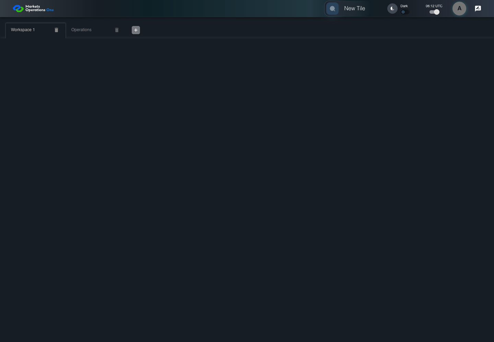

UI-SHL-005 number workspace after custom label
PASS · application/run-050/ui-shl-005-number-workspace-after-custom-label-038a35f5f046-attempt-1 · ACTUAL_APPLICATION_LOCAL_SERVICES
Actual current MFE; controlled accepted login, validation, and activity renewal; unsigned fixture JWT; explicit stored workspaces. No real identity, server authorization, or backend persistence verification.
2026-10-22T06:12:06.690Z to 2026-10-22T06:12:08.903Z
Assertions and result · Artifact manifest · Exact run inputs and source hashes
Result SHA-256:8a0c73bfc7c19817d41861add11401ef81cc487faf0ab229dd215c350460432dMachine observations
- stored-workspace-setup.json
90bed26d9d590b7258b049c675c535a06d9012adb3a9705915217a70c8c21087
Screenshot capture: CAPTURED. Named frames: 5.
Step screenshot evidence: COMPLETE. 4/4 canonical steps have execution screenshots.
Canonical step timeline
Given User A is authenticated as fixture UI-USER-01 with the case-specific permissions
Execution: PASSED.1. step-01 Visible state after step 1: Given User A is authenticated as fixture UI-USER-01 with the case-specific permissions
2026-10-22T06:12:07.955Z · 1440×1000
Step: /Users/lushevol/code/github/ratan-release-impact/workbench/tasks/ui-test-coverage-20261022/test-cases.md:5528
SHA-256:d80117b7bf28998d1d8b7e622e379a63b25f4bdb6cd7baabb9c22232fbdee9ffAnd two tabs exist and the last is labelled Operations
Execution: PASSED.
2. step-02 Visible state after step 2: And two tabs exist and the last is labelled Operations
2026-10-22T06:12:08.055Z · 1440×1000
Step: /Users/lushevol/code/github/ratan-release-impact/workbench/tasks/ui-test-coverage-20261022/test-cases.md:5529
SHA-256:84afbc8bd6755f0770f2fb0a941a0f44cdf3efa9c6bb312d75a47da731a7f00fWhen User A clicks button named "Add Workspace" inside the shell tablist named "workspaces"
Execution: PASSED.3. step-03 Visible state after step 3: When User A clicks button named "Add Workspace" inside the shell tablist named "workspaces"
2026-10-22T06:12:08.213Z · 1440×1000
Step: /Users/lushevol/code/github/ratan-release-impact/workbench/tasks/ui-test-coverage-20261022/test-cases.md:5530
SHA-256:38d837699adb863eb0c36535abe3a1dbe8699a4fe12ce390f61e2a62df264c33Then tab with source identity "Workspace Name textbox value Workspace 3" inside the shell tablist named "workspaces" is selected
Execution: PASSED.4. step-04 Visible state after step 4: Then tab with source identity "Workspace Name textbox value Workspace 3" inside the shell tablist named "workspaces" is selected
2026-10-22T06:12:08.290Z · 1440×1000
Step: /Users/lushevol/code/github/ratan-release-impact/workbench/tasks/ui-test-coverage-20261022/test-cases.md:5531
SHA-256:47fd1d87354e0fc68979da9e26aa8ccd93135d5c61c6beb0e42191c6c7d587df
Additional named frames

The final visible state after the named test assertions.
2026-10-22T06:12:08.474Z · 1440×1000Step: Test source: /Users/lushevol/code/github/ratan-release-impact/workbench/e2e/audit-specs/workspace-edges.spec.ts:42
SHA-256:
47fd1d87354e0fc68979da9e26aa8ccd93135d5c61c6beb0e42191c6c7d587dfScreenshots establish visible state only. Assertions and traces support functional claims.